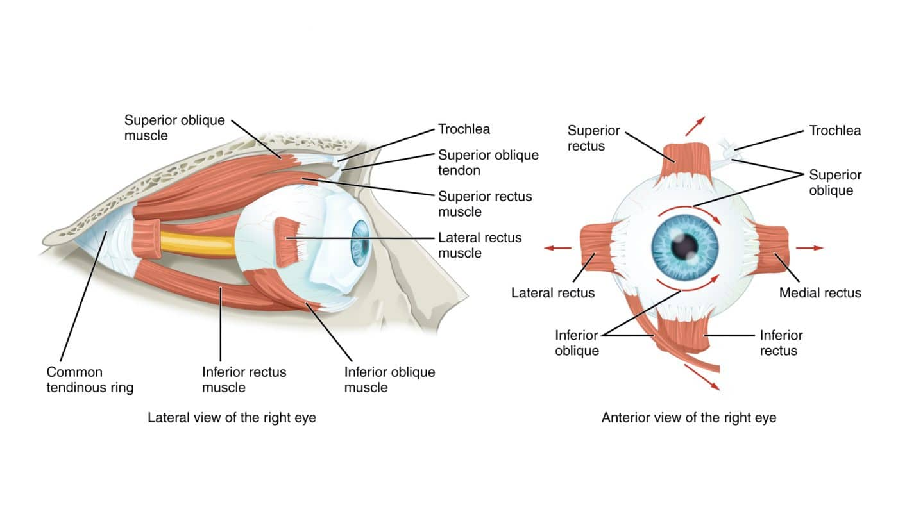

목이 아픈데 눈동자 때문이라네요, 도대체 일반인들중 누가 믿을까요 ?
하지만 실제로 흉추, 목의 통증 혹은 움직임의 제한의 근본적 원인이 실제로 눈의 움직임 부족으로 생길 수 있습니다.
눈에도 실제로 근육들이 존재합니다. 그러한 근육들은 눈동자의 움직임을 만들어 주는 역할을 해주는데요, 눈동자의 움직임이 제한된다면 우리는 제한되어 있는 곳으로
시선을 옮기기 위해 다른 분절들을 사용할 것입니다. 이는 자연스레 보상작용으로 나타나게 됩니다.
실제로 케이스 스터디 중, 목 통증을 가진 클라이언트들이 눈동자 돌림의 제한이 있는 경우가 많았고 이를 개선해주자 목 통증이 많이 가라앉았다는 피드백을 받은
사례도 많이 존재합니다.
눈은 또한 전정기관과 깊은 관계가 있어서 다른 영향을 주고 받을 수 있는 가능성이 충분합니다.
그래서 시각 트레이닝, 비젼 트레이닝도 많은 센터에서 진행하고 있으며 이는 우리의 실무에 많은 영향을 주게 됩니다.
끊임없이 클라이언트의 움직임을 평가해야하고, 여기에 눈의 기능도 간과해서는 안되는 요소입니다.